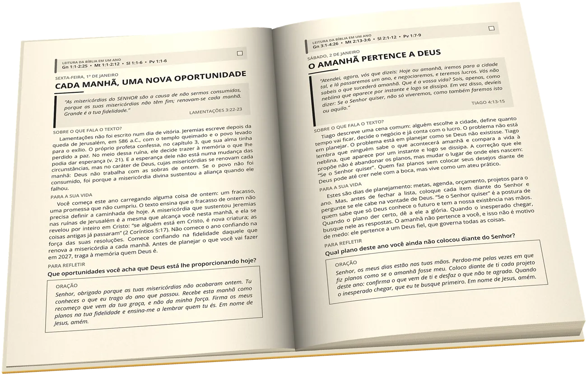
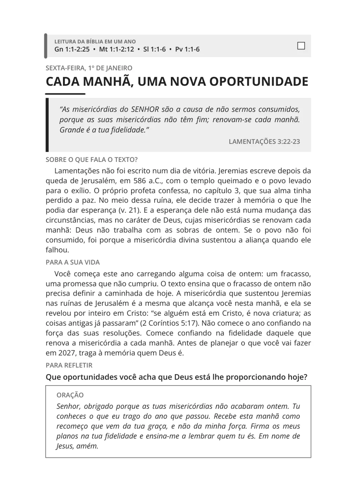

365 porções da Palavra pregada para o seu dia, uma para cada dia de 2027, com a Bíblia inteira em um ano.
Pré-venda até 5 de novembro. Envios a partir de 15 de novembro.
Quero o meu exemplarDepois de alimentar quase cinco mil pessoas com cinco pães e dois peixinhos, Jesus deu uma ordem que quase passa despercebida no meio do milagre:
Todo domingo um sermão é servido à igreja depois de dias de estudo e oração. Mas na segunda-feira a vida volta a correr, e boa parte do que foi ouvido fica pelo caminho. Este livro nasceu dessa ordem de Jesus: recolhi os pedaços dos meus sermões e reparti em porções do tamanho de um dia, para que o alimento chegue também à segunda-feira, à quinta à noite e àquela manhã difícil em que ninguém está pregando para você.
São 365 devocionais, um para cada dia de 2027. Quando os sermões se esgotaram, segui pelo mesmo caminho que o púlpito sempre segue: as grandes doutrinas das cartas de Paulo, levadas à vida prática, alternadas com a sabedoria dos Salmos, de Provérbios, de Eclesiastes e de Lamentações.
Cada devocional ocupa uma página inteira, com tudo o que você precisa para o seu tempo com Deus naquele dia.


Seguindo a faixa do alto de cada página, você lê de Gênesis a Apocalipse até 31 de dezembro, caminhando pelos dois Testamentos ao mesmo tempo.
Carnaval, Semana Santa e Páscoa, Dia das Mães, Dia dos Pais, Advento e Natal ganharam devocionais próprios, no dia em que caem em 2027.
Explicação antes da aplicação, texto respeitado no seu contexto e linguagem clara, sem promessas que a Bíblia não faz.
Dez minutos por dia, num horário fixo, com um caderno ao lado para responder à pergunta do dia.
Casais e famílias podem ler a mesma página e conversar sobre a pergunta à mesa.
Pequenos grupos e células podem escolher um devocional da semana e ler juntos o capítulo de onde saiu o texto.
Pastor da Nossa Igreja Marabá, no Pará, há mais de vinte anos prega em comunidades por todo o país. É também Tenente-Coronel do Corpo de Bombeiros Militar do Pará, onde comanda o 5º Grupamento Bombeiro Militar.
Escreve e fala sobre religiosidade saudável e vida em comunidade para mais de 160 mil pessoas no Instagram, em @prfelipegalucio. É autor de RESET, O Pedro dos Milagres e Quando a Igreja Mata.
Está. O valor de R$ 65,00 já inclui o envio pelos Correios para qualquer lugar do Brasil.
A pré-venda vai até 5 de novembro, e os envios pelos Correios começam a partir de 15 de novembro. Quando o seu livro for postado, o código de rastreio chega no seu e-mail.
Pode. Cada página tem a data, então é só começar pelo dia em que você estiver. O plano de leitura também pode ser retomado de qualquer ponto.
Serve. A linguagem é clara, cada texto é explicado antes de ser aplicado, e a oração do fim ajuda quem ainda não sabe bem como orar.
Pode, e é uma ótima ideia para o fim do ano. No formulário, escreva o seu nome, marque que é presente e coloque o nome e o endereço de quem vai receber.
Responda o e-mail de confirmação do seu pedido citando o número do cadastro que aparece depois que você preencher o endereço, ou me chame por mensagem no Instagram, @prfelipegalucio.
R$ 65,00 com frete incluso para todo o Brasil. Envios a partir de 15 de novembro.
Quero o meu exemplar